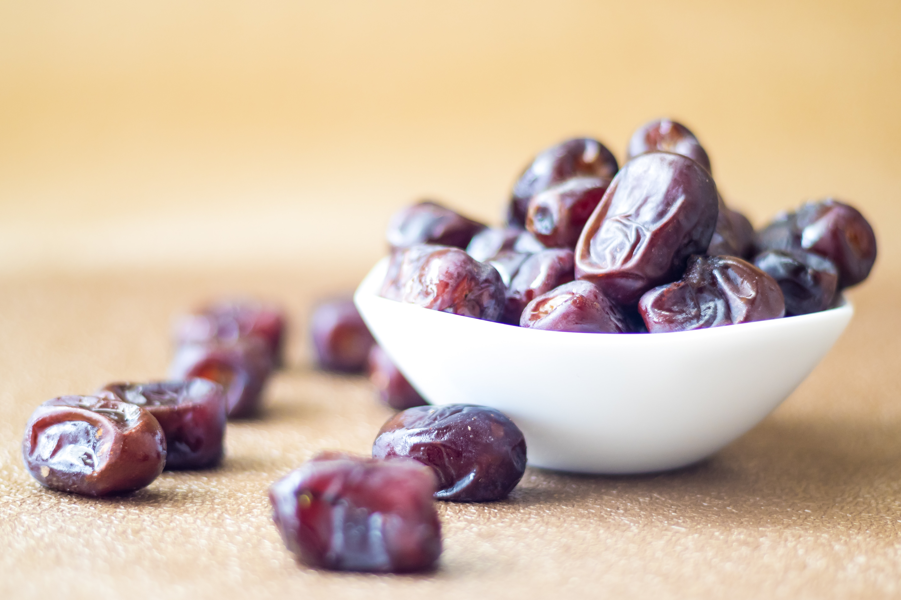

Dates

Dates are not only delicious but also have several potential medicinal effects and health benefits:
Rich in Nutrients: Dates are packed with essential nutrients, including dietary fiber, vitamins (such as B vitamins and vitamin K), and minerals (like potassium, magnesium, and iron). They are a concentrated source of energy, making them a nutritious snack.
Digestive Health: Dates are a good source of dietary fiber, which can aid digestion and prevent constipation. They also contain sorbitol, a natural sugar alcohol that can have a mild laxative effect.
Heart Health: Dates are naturally low in sodium and high in potassium. This potassium-sodium balance can help regulate blood pressure, contributing to heart health. Additionally, the fiber and antioxidants in dates may help reduce the risk of heart disease.
Rich in Antioxidants: Dates contain various antioxidants, such as flavonoids, carotenoids, and phenolic acid, which help combat oxidative stress and reduce the risk of chronic diseases.
Bone Health: Dates are a good source of minerals like calcium, phosphorus, and magnesium, which are essential for maintaining strong bones and may help prevent conditions like osteoporosis.
Natural Sweetener: Dates can be used as a natural sweetener in recipes. They offer a healthier alternative to refined sugar and can be used in various dishes, including smoothies, desserts, and energy bars.
Energy Boost: Dates are high in natural sugars, including glucose, fructose, and sucrose, which can provide a quick energy boost. They are a popular choice for athletes and those needing a fast source of energy.
Iron Content: Dates are a good source of iron, which is important for preventing anemia and supporting overall energy levels.
Reduced Risk of Colon Cancer: Some studies suggest that the fiber content in dates may help reduce the risk of colon cancer.
Natural Remedy for Anemia: Dates are traditionally used in some cultures as a remedy for anemia due to their iron content.
Improved Brain Health: The B vitamins in dates, such as vitamin B6, support brain health and cognitive function.
Pregnancy Support: Dates are often recommended to pregnant women because they may help with labor and delivery. They contain compounds that are believed to stimulate uterine contractions and reduce the need for labor-inducing medications.
It's important to consume dates in moderation because they are calorie-dense due to their natural sugar content. They are a healthy addition to a balanced diet but should be part of an overall nutrition plan. If you have specific health concerns or conditions, it's advisable to consult with a healthcare professional or a dietitian before making significant changes to your diet.